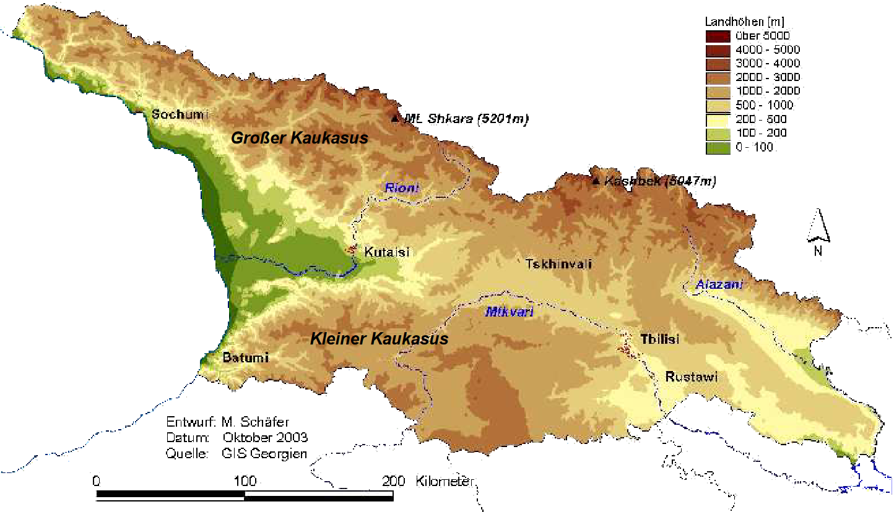

Geografie
Georgien liegt im Kaukasus zwischen Europa und Asien und hat eine Fläche von etwa 69 700 Quadratkilometern. Im Norden grenzt es an Russland und im Westen an das Schwarze Meer. Die Hauptstadt Tiflis befindet sich im Osten am Fluss Kura. Das Land ist stark gebirgig, mit Gipfeln über 5 000 m Höhe. Während im Südwesten ein subtropisches Klima herrscht, ist es im Norden kalt und gebirgig. Zahlreiche Flüsse wie die Kura und die Assa durchziehen Georgien von Ost nach West. Reich an Wäldern, Schluchten und Nationalparks bietet es vielfältige Landschaften. Diese geologische Vielfalt macht Georgien zu einem spannenden Ziel für Naturliebhaber.
